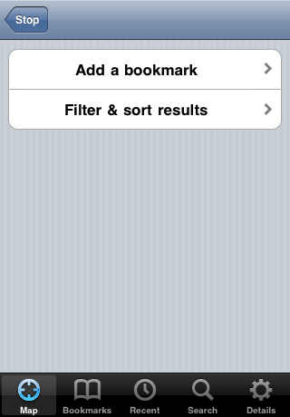
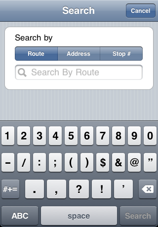
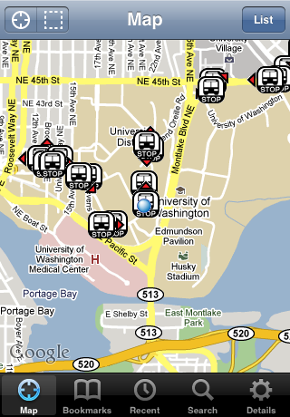

OneBusAway Native iPhone App
We finally have a native iPhone app. We hope you like it!
Goto the Apple iTunes Store to download the app
Features include:
- Real-time arrival arrival information for public transit.
- Map display of stops and routes.
- Nearby stops search for location-aware devices.
- Bookmarks and recent stop history.
- Search for stops by route, address, and stop number.
For detailed instructions on how to use the app, see instructions below.
Support
If you have problems, questions, comments, or feedback concering our native iPhone application, there are a number of ways to get in touch with us:
Drop us an e-mail at contact@onebusaway.org
Send us a tweet at @onebusaway
Submit a bug or feature request at our issue-tracker
No matter which method you choose, we're happy to hear from you.
Instructions
Hopefully the app is pretty easy to use. Here is a quick run down of the features of the app:
- When the app launches, it immediately displays nearby stops on a map.
- Navigate the app with the buttons at the bottom: Map, Bookmarks, Recent, Search, and Details
- Click on a stop icon to see the name of the stop and the list of routes at that stop. Click the blue arrow to see real-time arrival info for that stop.
- You can always return to your current location by pressing the cross-hairs button in the upper left.
- You can search for stops in other areas of the map by dragging and zooming the map, and then clicking the "search current map view" button (dashed box icon) in the upper left.

- Real-time arrival information is shown for a selected stop.
- The route number is listed on the left, the destination and predicted arrival time are shown in the middle, and the number of minutes until arrival is show on the right.
- A time of "NOW" means the bus should be arriving in the next minute or so. A time of "-4" minutes means the bus departed for minutes ago.
- Colors: green means the bus is on time, blue means the bus is late, and red means the bus is early.
- Click the refresh button in the upper-left to load the latest results.
- Click the "Options" button at the bottom of screen to bookmark the stop or filter/sort the the list of arrivals.

- After clicking the "Options" button at the bottom of the listings of real-time arrivals at a stop, you can either bookmark the current stop or set the filter/sort settings for the stop.

- Filtering let's you set the sort order for the listing of real-time arrivals at a stop and set which routes will be displayed.
- Filter settings are stop-specific.

- Choose the "Search" tab at the bottom of the app to bring up the search screen.
- You can search by route, street address, or stop number.

- Searching by route will show all the stops for the given route, but will automatically zoom in to the stops closest to your current location.